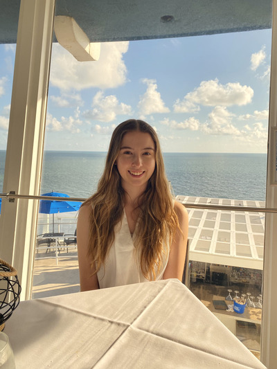

<div class="textcontainer">
<br>
<h3 class="nav-title">About Me</h3>
<p class="margin"> </p>
<div class="center-row">

<p id="aboutme">
Hello! My name is Madison Davis.
<br/><br/>
Class: 2026
<br />
House: Mather
<br />
Concentration: Computer Science
<br/><br/>
I grew up in Chicago and now live in Sarasota, Florida. I've always been passionate about
the entire product build-line, from ideating to prototyping and deploying. Most of my
experience has been in software, and I am enrolling in this class to lay the foundations
for hardware exploration. Aside from career passions,
I love to draw, hike, dance, and cook (when it doesn't blow up). I have an
affinity for alpacas, Pinnochio's Sicilian cheese pizza, and escape rooms.
<br/><br/>
</p>
</div>
</div>
<section class="whitespace-about">
<div class="centered-text-about">
<p>To see my main website with all of my projects, visit here: <br/>
https://compaulo.com</p>
</div>
</section>